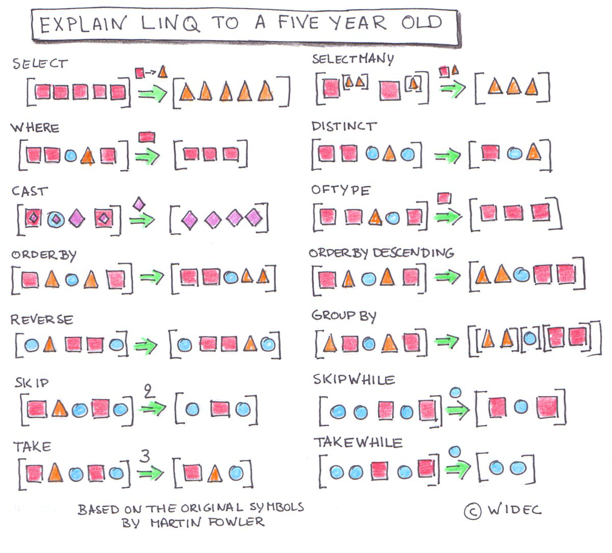

C#
DistinctBy Extension Method
The following code shows an extension method for IEnumerable<T> makes a collection distinct by a certain value.
public static IEnumerable<TSource> DistinctBy<TSource, TResult>(this IEnumerable<TSource> enumerable, Func<TSource, TResult> selector) { if (enumerable == null) { throw new ArgumentNullException(nameof(enumerable)); } if (selector == null) { throw new ArgumentNullException(nameof(selector)); } HashSet<TResult> set = new HashSet<TResult>(); foreach (TSource item in enumerable) { TResult value = selector(item); if (set.Add(value)) { yield return item; } } }
LINQ Visualization
 Image source
Uninstall Program by Name
/// <summary> /// Uninstalls the specified product. /// </summary> public static void UninstallProduct(string productName) { ProcessStartInfo uninstallProcessStart = new ProcessStartInfo { FileName = "msiexec", Arguments = $"/x {GetProductCode(productName)} /quiet" }; Process uninstallProcess = Process.Start(uninstallProcessStart); uninstallProcess?.WaitForExit(); } /// <summary> /// Returns the product code of the specified product, or null if it is not installed. /// </summary> public static string GetProductCode(string productName) { foreach (RegistryKey registryKey in EnumerateInstalledProducts()) { if (registryKey.GetValue("DisplayName")?.ToString() == productName) { return registryKey.Name.Split('\\')?.LastOrDefault(); } } return null; } /// <summary> /// Enumerates the <see cref="RegistryKey"/> objects for all the installed products. /// </summary> public static IEnumerable<RegistryKey> EnumerateInstalledProducts() { using (RegistryKey key = Registry.LocalMachine.OpenSubKey(@"SOFTWARE\Microsoft\Windows\CurrentVersion\Uninstall")) { if (key != null) { foreach (string subKeyName in key.GetSubKeyNames()) { using (RegistryKey subKey = key.OpenSubKey(subKeyName)) { if (subKey != null) { yield return subKey; } } } } } using (RegistryKey key = Registry.LocalMachine.OpenSubKey(@"SOFTWARE\WOW6432Node\Microsoft\Windows\CurrentVersion\Uninstall")) { if (key != null) { foreach (string subKeyName in key.GetSubKeyNames()) { using (RegistryKey subKey = key.OpenSubKey(subKeyName)) { if (subKey != null) { yield return subKey; } } } } } }